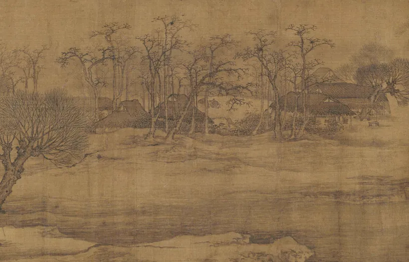
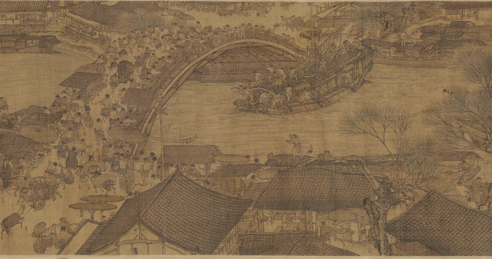

看一眼

線上特展 01 THE SONG SCROLL
沿著一條河，走進千年前的城市日常。
從城郊小路到汴河虹橋，再到人聲鼎沸的街市。這一次，讓我們像宋人展卷一樣，從右往左，慢慢看。

01 / EXPLORE THE SCROLL
從最右邊的郊外出發。拖曳畫面、滑動縮圖，或直接點選下方站點，看見原畫裡藏著的生活細節。
看一眼

02 / BEYOND THE PICTURE
把《清明上河圖》當成一次散步。這三個角度，讓你再看一次同一張畫時，看見不一樣的東西。
03 / LOOK AGAIN
三道小題，看看剛才的汴京散步留下了什麼印象。答完一題就能看到解析。